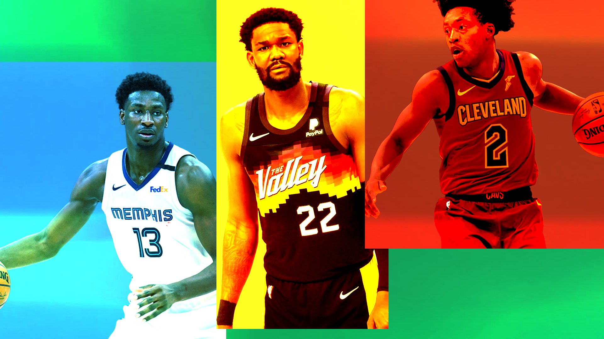

Rookie extensions: Who's locking in and who's locked out?
With the rookie extension deadline looming, who will get an offer before free agency?
Sean Carroll illustration
T he rookie extension deadline is one of the more underrated dates on the NBA calendar. It unfortunately falls on the same day as opening night, taking away all the attention (except for some nerdy podcasts).
Players entering the fourth and final year of their rookie-scale deal can negotiate an extension between the end of their third season and start of the fourth. In our COVID-interrupted case, those dates are between 3 August and 18 October 2021.
The best players in a rookie class are no-brainers, they sign as soon as possible, as seen with Luka Doncic, Trae Young or Shai Gilgeous-Alexander. This offseason, we even saw Michael Porter Jr. and the Denver Nuggets ink an extension well before the deadline, easing some of the concerns employing Curious Mike brings on.
In 2020, Donovan Mitchell, Jayson Tatum and Bam Adebayo all signed extensions before the start of the season while players like Lonzo Ball, John Collins, Jarrett Allen and Lauri Markkanen couldn’t come to an agreement.
In most cases, the reasons a player and team can’t agree is because the player believes they’re worth more than the team is willing to pay. In the case of Collins, he went out and played an efficient role on the Eastern Conference finalists, then got the money he wanted.
For another player like Lonzo Ball, who couldn’t quite convince David Griffin of his worth, he took the matter into restricted free agency and signed an offer from the Chicago Bulls.
Let’s take a look at some of players still eligible to sign extensions with their current teams heading into the start of the 2021-22 NBA season.
Deandre Ayton, this could get awkward
Deandre Ayton proved many doubters wrong with his most recent run in the 2021 NBA playoffs, anchoring the defence and playing a crucial role on the Western Conference champion Phoenix Suns.
He proved that there still is value in a traditional big man not named Nikola Jokic, Joel Embiid or Rudy Gobert and looked like a completely different player to the shy rookie out of Arizona. His playoff success also led some curious fans to believe Ayton’s success could be replicated by other young bigs.
In Ayton’s first trip to the playoffs, he averaged 15.8 points, 11.8 rebounds and 1.1 blocks while shooting 66 percent from the floor. His production on offence didn’t just look great on an Excel spreadsheet, his fearless rim-rolling and explosive
dunks layups drew defenders in, opening up all kinds of looks for Devin Booker and Chris Paul.
He has it all: an elite regular season, an outstanding playoff performance and the pedigree of a first overall draft pick. But despite all this, he’s still without a contract extension and it doesn’t even look close.
Adrian Wojnarowksi, ESPN reported last week that contract extension talks have stalled as the big man has no intensions of accepting a contract worth less than the max. Ayton’s max would be a five-year, $172 million deal that could include bonuses up to $207 million.
Now, I don’t want to belittle Woj’s importance to the NBA world, but a lot of his sources are agents and come from the players’ point of view. When he does report from the league’s perspective, it’s usually one of the softest, apolitical reports known to man that the NBA gives to him because they understand his reach.
For Woj to report that it’s simply Phoenix not offering all they can, fans might ask themselves: “hmm, which of these two parties has a prior history of not paying for on-court talent?”
Here’s a snippet from Adrian’s original report (yeah, we’re on a first-name basis): “If Suns owner Robert Sarver doesn't come to an agreement with Ayton before the deadline, it will certainly raise questions again about his commitment to constructing a sustainable contender in the Western Conference.”
What to do with Collin Sexton?
I’m contractually obligated, as a member of The Deep Two NBA Podcast, to mention Collin Sexton at all times and wow, is this one of the trickier situations in the NBA.
The Cleveland Cavaliers were going to have to ask themselves a tricky question with Sexton and well… they haven’t answered it yet. As a rebuilding team, it’d make perfect sense to retain a 22-year-old guard who has gotten exponentially better in his three years in the league.
But ever since entering the league, Sexton has failed to shake his reputation as a chucker, as a guy who’s always going to average a high number of points on a losing team but won’t change his stripes.
To his credit, people complained about his passing ability, so he upped that from three assists a night to 4.4, even while Darius Garland took more of the ball out of his hands. He wasn’t considered an elite shooter but he still shot over league average from behind the arc on more attempts this past season (4.4).
Cavs general manager Koby Altman has said all the right things, telling reporters on media day that he wants to get a deal done: “We want him here long term. He wants to be here long term. We’re working with his representation to see that through, but this is someone that has been with us since the start of this thing and we love him.
“We will deal with that behind closed doors. The feelings are mutual in terms of something long term.”
Hours after that quote was recorded, Michael Porter Jr. signed a max extension with the Nuggets, an extension that ended up giving more to the player than some initially expected due to injury concerns.
Sexton should probably get an offer near the max and he should take it. A little less than what Cleveland could offer is better than he’d get anywhere else since many of the cap space teams look to be hoarding space to collect assets, not sign players.
One little speed bump in the Sexton extension is that signing one now would render him untradeable for three months, taking a major chip off the table for a Ben Simmons deal.
Jaren Jackson Jr., pressure from every angle
The Memphis Grizzlies need this coming season to go as well as possible for Jaren Jackson Jr.
Jaren Jackson Jr. needs this coming season to go as well as possible for Jaren Jackson Jr.
Everything was so cute at the start for JJJ. He was a fine selection with the fourth pick for the Grizz and he spent the first half of his rookie season playing (and more importantly, learning) from Marc Gasol before he was traded to the Toronto Raptors.
The following season, Jackson Jr. took 6.5 three-point attempts a night and looked like a supercharged version of a modern big man: efficient threes and interior defence. Everything Myles Turner says he is but with a bit more flair and off-balance-ness about his threes.
Then Jaren tore his meniscus in the NBA Bubble, missed the rest of the restart and suspiciously didn’t return until late in the 2020-21 season, playing a total of 11 games with four starts. It’s too hard to ask for efficiency after missing that much time so it’s not worth listing JJJ’s averages this past season.
Every bone in my body believes that the Grizzlies want to offer the max to JJJ, they want him to be the anchor for their young defence while draining every wide-open three that Ja Morant can give him.
But with the uncertainty around his injury and lack of production in more than a calendar year now, who knows?
For JJJ, if can’t stay on the court and prove he’s worth the max when he does touch the court, he might have to settle for a smaller deal. With his injury woes, it’s unlikely that there’s a rival team out there willing to throw more money at him in restricted free agency.
From Memphis’ point of view, if JJJ isn’t the long-term answer at either of the big man spots, who’s rising with Morant? If the two-headed monster and young team around Morant is more of a one-headed monster, what do they do?
Is Mikal Bridges more important than Ayton?
If you had to pick between Deandre Ayton and Mikal Bridges, who would you choose?
That’s not the situation we’re in (or likely to get in), but the Phoenix Suns have somehow answered that question with “neither”.
Just when The Deep Two's Dante Boffa witnessed some magic and the start of something new, he proves himself to be more ‘optimistic’ than ‘cautious’.
Rob Sarver strikes again.
Without delving too deep into the value Bridges brings, the fact that extension talks have slowed down for both Ayton and Bridges is troubling. Even if Bridges isn’t worth his rumoured $20 million annual value (he probably is), the salary cap is projected to go up in the coming seasons so an above-value deal flattens out in a few seasons.
And if Sarver really wants to save some money, the team would be better off re-signing Bridges and then trading him for positive value. That would never happen, but even if it’s a question of Sarver’s money, it makes sense to retain young talent.
Just know this, the Phoenix Suns can afford to pay both Ayton and Bridges while keeping the rest of their team together. If it gets spun in any other way, know it’s Sarver.
Marvin Bagley the third, his royal highness
Marvin Bagley III hasn’t signed a contract extension with the Sacramento Kings. Yes, I can hear your puzzled gasps from here.
What would you even offer him? And on top of that, what would he willingly take? He would have a qualifying offer at around $14 million if the Kings offer it to him but that’s not happening.
If Bagley does want to take the minimum somewhere and recoup his value, it’s probably not in Sacramento.